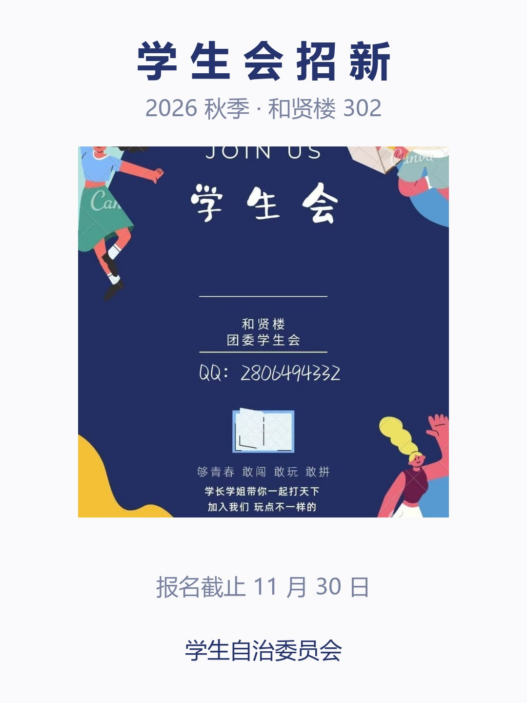

选完图不再直接上传，先进这一页：拖动移位置、双指捏合缩放，圆里看中的那一块才是头像。 左边能直接拖、能滚轮缩放，底下的「完成」会把取景框里的那块真裁出来给右边看。
v4 改这一处滑杆整条删掉（缩放只走双指捏合，屏幕上就少一排东西）； 「双指缩放 · 拖动移动」这行灰字贴到裁剪框下沿居中，「复位」用蓝字紧跟在它后面。 「完成」仍在最底部通栏。点一下「完成」能看见它变灰显示「已更新」，右边三档尺寸是它真裁出来的。

| 进页默认 | 先把图缩到「刚好铺满圆」，居中。不自动放大 —— 一进来就放大容易把人搞懵。 |
|---|---|
| 缩放下限 | 刚好铺满圆，不能再小。再小圆里就会露白，头像边上出现白圈。 |
| 拖动范围 | 图片的四条边都不能进到圆里，拖到头就停住（跟微信换头像一样的手感）。 |
| 缩放时 | 以圆心那一点为锚点缩放，不飘。双指捏合与滚轮（预览里）走同一套。 |
| 按钮位置 | 「完成」固定在内容区最下方、水平居中，margin-top:auto 沉到底边留 26px。手指拖完图拇指正好落在按钮上，不用再往右上角去够。宽度通栏 100%（蓝底白字，高 50px、圆角 999px）—— 陛下定了这一档，窄版胶囊不再留。 |
| ⚠️ 右上禁区 | 导航栏右上是微信胶囊（宽约 87px、离边 7px），小程序里永远被占着 —— 不放任何可点元素，也不放文字。标题靠 position:absolute 按屏幕中线居中，辅助操作全放内容区。 |
| 手势 | 不再有滑杆，缩放只走双指捏合（下限 1×，上限 3×）。提示语与「复位」并成一行贴在裁剪框下沿：双指缩放 · 拖动移动（灰）复位（蓝，--accent）。 |
| 输出 | 720×720 方图，JPEG 质量 0.86，压完约 80~150KB，远低于 callFunction 那 1MB 的天花板。 |
| 入口 | 社团台头像右下角相机角标 → 选图 → 本页 → 完成即上传，不再有第二次确认。 |